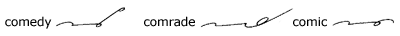
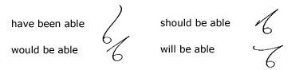

Unit
9
The Th Joinings
78.
The left-motion th is used before and after o,
r, l. In other cases the right-motion th
is used:
*The word although is
a combination of all and though.
79.
When th is the only consonant stroke, as in the brief
forms for that or they, or is in combination with
s, the right-motion th is used, as in these
and seethe.
Frequent Prefixes and Suffixes
80.
The prefixes con, com, coun, cog,
followed by a consonant, are expressed by k. The
suffix ly is expressed by a small circle, ily
and ally, by a loop.
81.
In words beginning with comm or conn, the
second m or n is written, thus:
When con or com
is followed by a vowel or by r or l, write kn
for con and km for com, thus:

82.
After a circle vowel, ly is written on the opposite
side from the vowel, thus:
83.
To express the plural of some brief forms ending in a circle
and of some words ending in a loop, a slight change is made in the
manner of joining s, thus:
Phrasing Principles
84.
Before words beginning with a downward character or o,
r, l, the word to is expressed by t:
85.
When repeated in a phrase, as is expressed by s:

86.
After be or been, the word able
is expressed by a:

87. Frequent
Phrases
88. Brief
Forms for Common Words
*The prefix form for agr-e-i,
a loop written above the following character, is used to express
the word agree.
†The angle between k and p
is maintained in the word complete to make a distinction between
complete and keep.
89. Reading
and Dictation Practice
90. Writing
Practice
1. It is hard to say what is known about
the model of the motor on which Horace Holiday is working. Several
people have seen it and praise it.
2. After Bob bought the boat he noticed
that the motor would stall often. After much analysis and
pottering over it, he spotted the cause of grief. It was a
little thing, and easy to fix.
3. The history of this country shows that
a hardy, hard-working people, gifted with vision, can achieve what
they fix as a goal if the goal has meaning to the people in general.
4. It was a shock to her to hear that
John Jones, after joking about it, really had started alone on an
airplane trip to Havana and was nearing his goal.
5. The "Lone Eagle" did not
cross the ocean merely by dreaming of it. He made ready for
a great trip by planning every detail. Study, hard work, and
the bravery to face peril without flinching helped him to achieve
his aim and to place his name on the scroll of the great men of
history.
Dear Sir: It will be necessary
for me to stay here till about the end of January, as there are
many matters of importance still to be finished. I am really
glad that you were able to see Mr. Hartman and close that business
with him. Such matters may easily cause hard feeling. There
is nothing at present that needs your presence here. The general
situation seems to be as good as it is in the East. I have
my heart set on making big gains for the company here this month.
I am working hard to achieve all possible. Yours truly, Transcription Key to
this Unit
- Next Unit - |